Code for Machine Learning and Data Science II Training Models
Table of Contents
These are the code snippets used in Training Models
part of Machine Learning and Data Science II.
Introduction
The following is a custom package written to handle plotting and other functions required by the lecture. it is by no means necessary as cp.store_fig can easily be replaced by using plt.show().
import matplotlib.pyplot as plt import ChalcedonPy as cp # Initialise ChalcedonPy cp.init(save_path="Training-Models", display_mode="slide")
Linear Regression
A linear model makes a prediction by simply computing a weighted sum of the input features, plus a constant called the bias term (also called the intercept term),
The Normal Equation
To find the value of \(\theta\) that minimizes the MSE, there exists a closed-form solution—in other words, a mathematical equation that gives the result directly.
This is called the Normal equation.
First generate some data.
import numpy as np np.random.seed(42) # to make this code example reproducible m = 100 # number of instances X = 2 * np.random.rand(m, 1) # column vector y = 4 + 3 * X + np.random.randn(m, 1) # column vector
The following code plots the data
import matplotlib.pyplot as plt plt.figure(figsize=(11, 6)) plt.plot(X, y, ".", label="Data Points") plt.xlabel("$x_1$") plt.ylabel("$y$", rotation=0) plt.axis([0, 2, 0, 15]) plt.legend(loc="upper left") cp.store_fig("generated-data-plot", close = True)
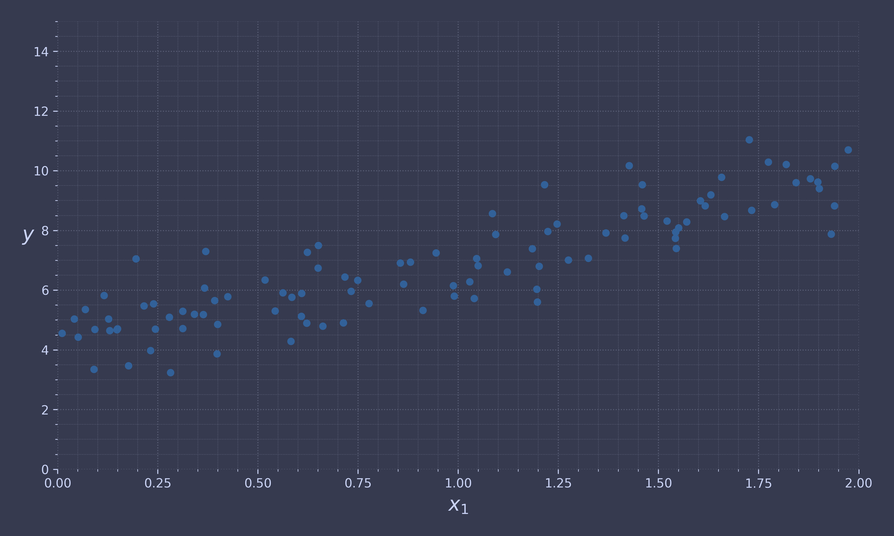
The @ operator performs matrix multiplication. If A and B are NumPy arrays, then A @ B is equivalent to np.matmul(A, B). Many other libraries, like TensorFlow, PyTorch, and JAX, support the @ operator as well. However, you cannot use @ on pure Python arrays (i.e., lists of lists).
Now time to calculate \(\hat{\theta}\) using the normal equation:
from sklearn.preprocessing import add_dummy_feature X_b = add_dummy_feature(X) # add x0 = 1 to each instance theta_best = np.linalg.inv(X_b.T @ X_b) @ X_b.T @ y
| FUNCTION | DEFINITION | MORE INFO |
| linalg.inv(...) | Given a square matrix a, return the matrix ainv satisfying a @ ainv = ainv @ a = eye(a.shape[0]) | Link |
| sklearn.preprocessing.add_dummy_feature(...) | Augment dataset with an additional dummy feature. | Link |
Let’s see what the theta values are:
print(theta_best)
[[4.21509616] [2.77011339]]
Not the best but not the worst either. Now we can make predictions using \(\hat{\theta}\):
X_new = np.array([[0], [2]]) X_new_b = add_dummy_feature(X_new) # add x0 = 1 to each instance y_predict = X_new_b @ theta_best print(y_predict)
[[4.21509616] [9.75532293]]
Let’s plot this model’s predictions:
plt.figure(figsize=(11, 6)) plt.plot(X, y, ".", label="Data Points") plt.plot(X_new, y_predict, "-", label="Predictions") plt.xlabel("$x_1$") plt.ylabel("$y$", rotation=0) plt.axis([0, 2, 0, 15]) plt.legend(loc="upper left") cp.store_fig("linear-model-predictions-plot", close = None)
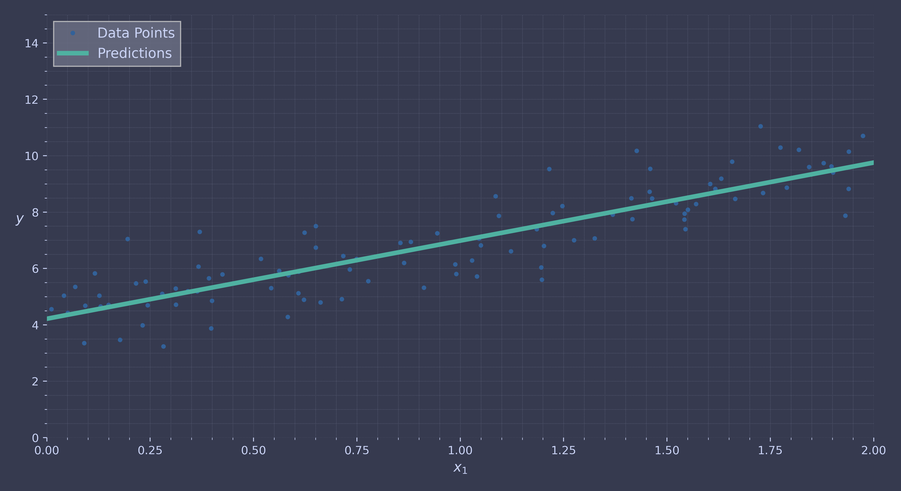
Performing linear regression using Scikit-Learn is relatively straightforward:
from sklearn.linear_model import LinearRegression lin_reg = LinearRegression() lin_reg.fit(X, y) print("Estimated coefficients: ", lin_reg.coef_) print("The b0 value is: ", lin_reg.intercept_)
Estimated coefficients: [[2.77011339]] The b0 value is: [4.21509616]
| FUNCTION | DEFINITION | MORE INFO |
| sklearn.linear_model.LinearRegression(...) | Ordinary least squares Linear Regression. LinearRegression fits a linear model with coefficients w = (w1, …, wp) to minimize the residual sum of squares between the observed targets in the dataset, and the targets predicted by the linear approximation. | Link |
| .fit(...) | Fit linear model. | Link |
Same information can be retrieved from np.linalg.lstsq():
theta_best_svd, residuals, rank, s = np.linalg.lstsq(X_b, y, rcond=1e-6)
| FUNCTION | DEFINITION | MORE INFO |
| np.linalg.lstsq(...) | Return the least-squares solution to a linear matrix equation. | Link |
You can use np.linalg.pinv() to compute the pseudoinverse directly:
np.linalg.pinv(X_b) @ y
| FUNCTION | DEFINITION | MORE INFO |
| np.linalg.pinv(...) | Compute the (Moore-Penrose) pseudo-inverse of a matrix. | Link |
Gradient Descent
Gradient descent is a generic optimization algorithm capable of finding optimal solutions to a wide range of problems.
The general idea of gradient descent is to tweak parameters iteratively in order to minimize a cost function.
Let’s look at a quick implementation of Batch Gradient Descent algorithm:
eta = 0.1 # learning rate n_epochs = 1000 m = len(X_b) # number of instances np.random.seed(42) theta = np.random.randn(2, 1) # randomly initialized model parameters # Each iteration over the training set is called an epoch. for epoch in range(n_epochs): gradients = 2 / m * X_b.T @ (X_b @ theta - y) theta = theta - eta * gradients print(theta)
[[4.21509616] [2.77011339]]
What about with different learning rate ? The code below does just that.
import matplotlib as mpl def plot_gradient_descent(theta, eta): m = len(X_b) plt.plot(X, y, ".") n_epochs, n_shown = 1000, 20 theta_path = [] for epoch in range(n_epochs): if epoch < n_shown: y_predict = X_new_b @ theta color = mpl.colors.rgb2hex(plt.cm.OrRd(epoch / n_shown + 0.15)) plt.plot(X_new, y_predict, linestyle="solid", color=color) gradients = 2 / m * X_b.T @ (X_b @ theta - y) theta = theta - eta * gradients theta_path.append(theta) plt.xlabel("$x_1$") plt.axis([0, 2, 0, 15]) plt.title(fr"$\eta = {eta}$") return theta_path
And the plotting function for the comparison for three different learning rates.
np.random.seed(42) theta = np.random.randn(2, 1) # random initialization plt.figure(figsize=(11, 6)) plt.subplot(131) plot_gradient_descent(theta, eta=0.02) plt.ylabel("$y$", rotation=0) plt.subplot(132) theta_path_bgd = plot_gradient_descent(theta, eta=0.1) plt.gca().axes.yaxis.set_ticklabels([]) plt.subplot(133) plt.gca().axes.yaxis.set_ticklabels([]) plot_gradient_descent(theta, eta=0.5) cp.store_fig("gradient-descent-plot", close = True)
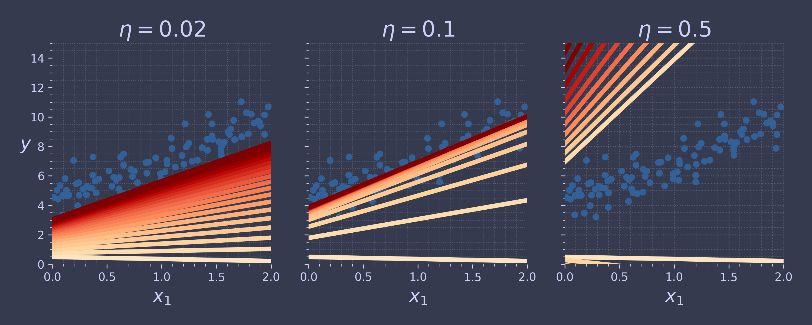
Stochastic Gradient Descent
stochastic gradient descent picks a random instance in the training set at every step and computes the gradients based only on that single instance.
theta_path_sgd = []
This code implements stochastic gradient descent using a simple learning schedule:
n_epochs = 50 t0, t1 = 5, 50 # learning schedule hyperparameters def learning_schedule(t): return t0 / (t + t1) np.random.seed(42) theta = np.random.randn(2, 1) # random initialization n_shown = 20 plt.figure(figsize=(11, 6)) for epoch in range(n_epochs): for iteration in range(m): if epoch == 0 and iteration < n_shown: y_predict = X_new_b @ theta color = mpl.colors.rgb2hex(plt.cm.OrRd(iteration / n_shown + 0.15)) plt.plot(X_new, y_predict, color=color) random_index = np.random.randint(m) xi = X_b[random_index : random_index + 1] yi = y[random_index : random_index + 1] gradients = 2 * xi.T @ (xi @ theta - yi) # for SGD, do not divide by m eta = learning_schedule(epoch * m + iteration) theta = theta - eta * gradients theta_path_sgd.append(theta) plt.plot(X, y, ".") plt.xlabel("$x_1$") plt.ylabel("$y$", rotation=0) plt.axis([0, 2, 0, 15]) cp.store_fig("stochastic-gradient-plot", close = True)
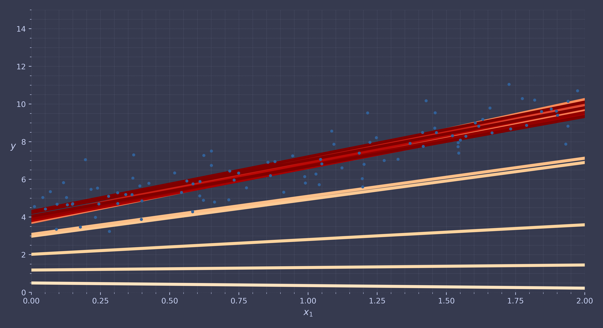
Let's see the solution to our algorithm.
print(theta)
[[4.21076011] [2.74856079]]
To perform linear regression using stochastic GD with Scikit-Learn, you can use the SGDRegressor class, which defaults to optimizing the MSE cost function.
from sklearn.linear_model import SGDRegressor sgd_reg = SGDRegressor(max_iter=1000, tol=1e-5, penalty=None, eta0=0.01, n_iter_no_change=100, random_state=42) sgd_reg.fit(X, y.ravel()) # y.ravel() because fit() expects 1D targets
| FUNCTION | DEFINITION | MORE INFO |
| sklearn.linear_model.SGDRegressor(...) | Linear model fitted by minimizing a regularized empirical loss with SGD. | Link |
As can be seen our solution is quite close to the one returned by the normal solution.
print(sgd_reg.intercept_, sgd_reg.coef_)
[4.21278812] [2.77270267]
Mini-batch Gradient Descent
Each step, instead of computing the gradients based on the full set (as in batch GD) or based on just one instance (as in stochastic GD), mini-batch GD computes the gradients on small random sets of instances called mini-batches.
Time to compare all three.
from math import ceil n_epochs = 50 minibatch_size = 20 n_batches_per_epoch = ceil(m / minibatch_size) np.random.seed(42) theta = np.random.randn(2, 1) # random initialization t0, t1 = 200, 1000 # learning schedule hyperparameters def learning_schedule(t): return t0 / (t + t1)
theta_path_mgd = [] for epoch in range(n_epochs): shuffled_indices = np.random.permutation(m) X_b_shuffled = X_b[shuffled_indices] y_shuffled = y[shuffled_indices] for iteration in range(0, n_batches_per_epoch): idx = iteration * minibatch_size xi = X_b_shuffled[idx : idx + minibatch_size] yi = y_shuffled[idx : idx + minibatch_size] gradients = 2 / minibatch_size * xi.T @ (xi @ theta - yi) eta = learning_schedule(iteration) theta = theta - eta * gradients theta_path_mgd.append(theta) theta_path_bgd = np.array(theta_path_bgd) theta_path_sgd = np.array(theta_path_sgd) theta_path_mgd = np.array(theta_path_mgd)
plt.figure(figsize=(11, 6)) plt.plot(theta_path_sgd[:, 0], theta_path_sgd[:, 1], "-s", linewidth=1, label="Stochastic") plt.plot(theta_path_mgd[:, 0], theta_path_mgd[:, 1], "-+", linewidth=2, label="Mini-batch") plt.plot(theta_path_bgd[:, 0], theta_path_bgd[:, 1], "-o", linewidth=3, label="Batch") plt.legend(loc="upper left") plt.xlabel(r"$\theta_0$") plt.ylabel(r"$\theta_1$ ", rotation=0) plt.axis([2.6, 4.6, 2.3, 3.4]) cp.store_fig("mini-batch-gradient-plot", close = True)
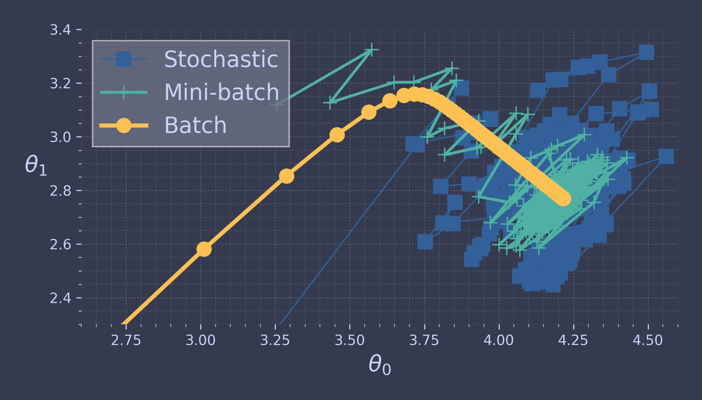
They all end up near the minimum, but batch GD’s path actually stops at the minimum, while both stochastic GD and mini-batch GD continue to walk around.
Polynomial Regression
What if your data is more complex than a straight line?
Surprisingly, you can use a linear model to fit nonlinear data. A simple way to do this is to add powers of each feature as new features, then train a linear model on this extended set of features. This technique is called polynomial regression.
First generate some random data.
np.random.seed(42) m = 100 X = 6 * np.random.rand(m, 1) - 3 y = 0.5 * X ** 2 + X + 2 + np.random.randn(m, 1)
And now we plot this data.
plt.figure(figsize=(11, 6)) plt.plot(X, y, ".", label="Data Points") plt.xlabel("$x_1$") plt.ylabel("$y$", rotation=0) plt.axis([-3, 3, 0, 10]) plt.legend(loc="upper left") cp.store_fig("quadratic-data-plot", close = True)
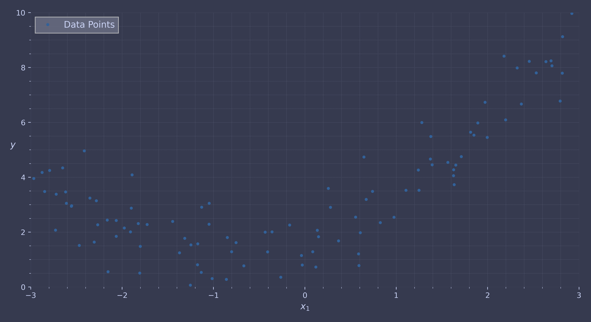
A single line wont fit. We need to use sklearn.preprocessing.PolynomialFeatures() for this:
from sklearn.preprocessing import PolynomialFeatures poly_features = PolynomialFeatures(degree=2, include_bias=False) X_poly = poly_features.fit_transform(X) print(X[0]) print(X_poly[0])
[-0.75275929] [-0.75275929 0.56664654]
| FUNCTION | DEFINITION | MORE INFO |
| sklearn.preprocessing.PolynomialFeatures(...) | Generate polynomial and interaction features. | Link |
We can now see our results.
lin_reg = LinearRegression() lin_reg.fit(X_poly, y) print(lin_reg.intercept_, lin_reg.coef_) X_new = np.linspace(-3, 3, 100).reshape(100, 1) X_new_poly = poly_features.transform(X_new) y_new = lin_reg.predict(X_new_poly)
[1.78134581] [[0.93366893 0.56456263]]
And plot our comparisons.
plt.figure(figsize=(11, 6)) plt.plot(X, y, ".", label="Data Points") plt.plot(X_new, y_new, "-", label="Predictions") plt.xlabel("$x_1$") plt.ylabel("$y$", rotation=0) plt.legend(loc="upper left") plt.axis([-3, 3, 0, 10]) cp.store_fig("quadratic-prediction-plot", close = True)
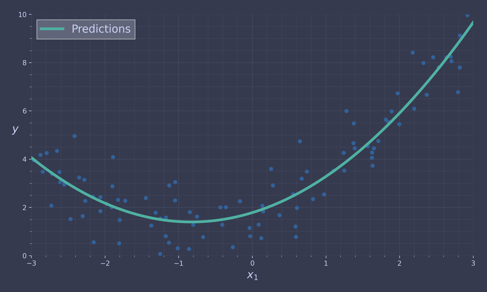
Learning Curves
Let's see if increasing the degree number improves our model.
from sklearn.preprocessing import StandardScaler from sklearn.pipeline import make_pipeline plt.figure(figsize=(11, 6)) for style, width, degree in (("-+", 2, 1), ("--", 2, 2), ("-", 1, 300)): polybig_features = PolynomialFeatures(degree=degree, include_bias=False) std_scaler = StandardScaler() lin_reg = LinearRegression() polynomial_regression = make_pipeline(polybig_features, std_scaler, lin_reg) polynomial_regression.fit(X, y) y_newbig = polynomial_regression.predict(X_new) label = f"{degree} degree{'s' if degree > 1 else ''}" plt.plot(X_new, y_newbig, style, label=label)
plt.plot(X, y, ".", label="Data Points") plt.legend(loc="upper left") plt.xlabel("$x_1$") plt.ylabel("$y$", rotation=0) plt.axis([-3, 3, 0, 10]) cp.store_fig("quadratic-prediction-with-degrees-plot", close = True) plt.close()
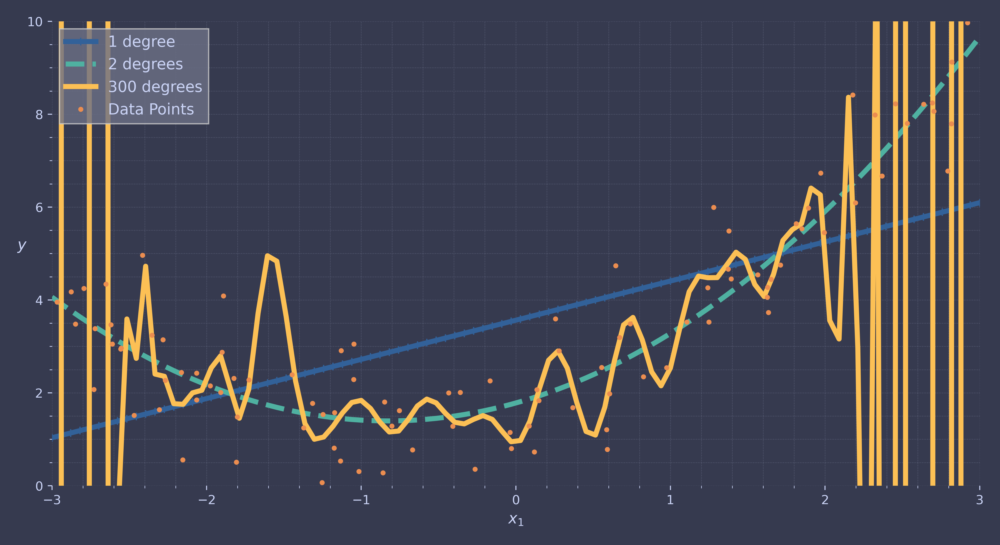
from sklearn.model_selection import learning_curve train_sizes, train_scores, valid_scores = learning_curve( LinearRegression(), X, y, train_sizes=np.linspace(0.01, 1.0, 40), cv=5, scoring="neg_root_mean_squared_error") train_errors = -train_scores.mean(axis=1) valid_errors = -valid_scores.mean(axis=1)
plt.figure(figsize=(11, 6)) plt.plot(train_sizes, train_errors, "-+", label="train") plt.plot(train_sizes, valid_errors, "-", label="valid") plt.xlabel("Training set size") plt.ylabel("RMSE") plt.legend(loc="upper right") plt.axis([0, 80, 0, 2.5]) cp.store_fig("underfitting-learning-curves-plot", close = True)
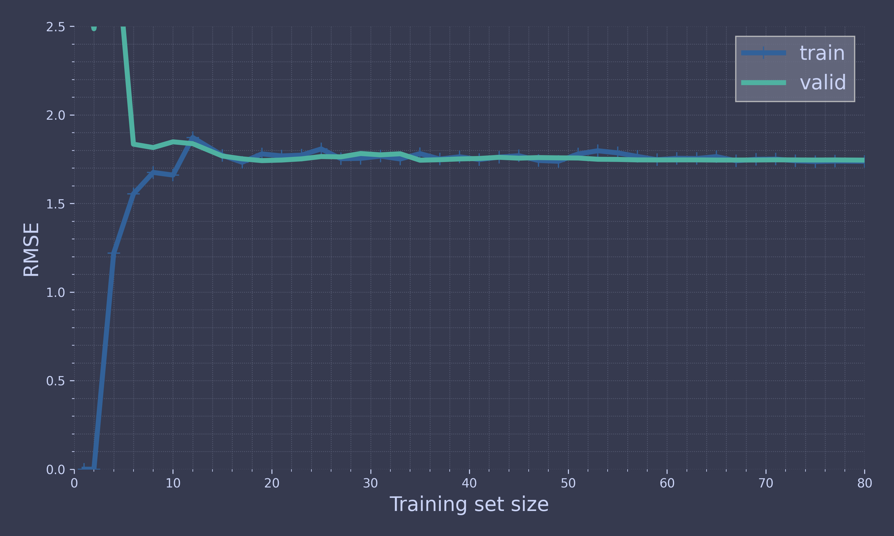
from sklearn.pipeline import make_pipeline polynomial_regression = make_pipeline( PolynomialFeatures(degree=10, include_bias=False), LinearRegression()) train_sizes, train_scores, valid_scores = learning_curve( polynomial_regression, X, y, train_sizes=np.linspace(0.01, 1.0, 40), cv=5, scoring="neg_root_mean_squared_error")
train_errors = -train_scores.mean(axis=1) valid_errors = -valid_scores.mean(axis=1)
plt.figure(figsize=(11, 6)) plt.plot(train_sizes, train_errors, "-+", label="train") plt.plot(train_sizes, valid_errors, "-", label="valid") plt.legend(loc="upper right") plt.xlabel("Training set size") plt.ylabel("RMSE") plt.axis([0, 80, 0, 2.5]) cp.store_fig("learning-curves-plot", close = True)
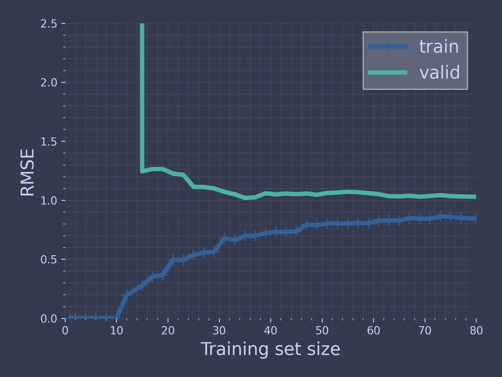
Regularised Linear Models
Ridge Regression
np.random.seed(42) m = 20 X = 3 * np.random.rand(m, 1) y = 1 + 0.5 * X + np.random.randn(m, 1) / 1.5 X_new = np.linspace(0, 3, 100).reshape(100, 1)
plt.figure(figsize=(11, 6)) plt.plot(X, y, ".", label = "Data Points") plt.xlabel("$x_1$") plt.ylabel("$y$ ", rotation=0) plt.legend(loc="upper right") plt.axis([0, 3, 0, 3.5]) cp.store_fig("ridge-regression-plot-init", close = True)
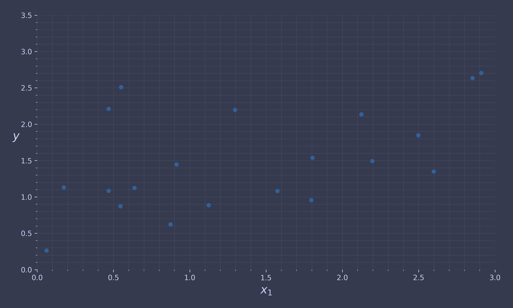
from sklearn.linear_model import Ridge ridge_reg = Ridge(alpha=0.1, solver="cholesky") ridge_reg.fit(X, y) ridge_reg.predict([[1.5]])
def plot_model(model_class, polynomial, alphas, **model_kwargs): plt.plot(X, y, ".") for alpha, style in zip(alphas, (":", "--", "-")): if alpha > 0: model = model_class(alpha, **model_kwargs) else: model = LinearRegression() if polynomial: model = make_pipeline( PolynomialFeatures(degree=10, include_bias=False), StandardScaler(), model) model.fit(X, y) y_new_regul = model.predict(X_new) plt.plot(X_new, y_new_regul, style, linewidth=2, label=fr"$\alpha = {alpha}$") plt.legend(loc="upper left") plt.xlabel("$x_1$") plt.axis([0, 3, 0, 3.5]) plt.figure(figsize=(11, 6)) plt.subplot(121) plot_model(Ridge, polynomial=False, alphas=(0, 10, 100), random_state=42) plt.ylabel("$y$ ", rotation=0) plt.subplot(122) plot_model(Ridge, polynomial=True, alphas=(0, 10**-5, 1), random_state=42) cp.store_fig("ridge-regression-plot-result", close = True)

sgd_reg = SGDRegressor(penalty="l2", alpha=0.1 / m, tol=None, max_iter=1000, eta0=0.01, random_state=42) sgd_reg.fit(X, y.ravel()) # y.ravel() because fit() expects 1D targets print(sgd_reg.predict([[1.5]]))
[1.55302613]
ridge_reg = Ridge(alpha=0.1, solver="sag", random_state=42) ridge_reg.fit(X, y) print(ridge_reg.predict([[1.5]]))
[[1.55326019]]
alpha = 0.1 A = np.array([[0., 0.], [0., 1.]]) X_b = np.c_[np.ones(m), X] print(np.linalg.inv(X_b.T @ X_b + alpha * A) @ X_b.T @ y) print(ridge_reg.intercept_, ridge_reg.coef_ )
[[0.97898394] [0.3828496 ]] [0.97896386] [[0.38286422]]
Lasso Regression
from sklearn.linear_model import Lasso lasso_reg = Lasso(alpha=0.1) lasso_reg.fit(X, y) lasso_reg.predict([[1.5]])
plt.figure(figsize=(11, 6)) plt.subplot(121) plot_model(Lasso, polynomial=False, alphas=(0, 0.1, 1), random_state=42) plt.ylabel("$y$ ", rotation=0) plt.subplot(122) plot_model(Lasso, polynomial=True, alphas=(0, 1e-2, 1), random_state=42) cp.store_fig("lasso-regression-plot-init", close = True)

t1a, t1b, t2a, t2b = -1, 3, -1.5, 1.5 t1s = np.linspace(t1a, t1b, 500) t2s = np.linspace(t2a, t2b, 500) t1, t2 = np.meshgrid(t1s, t2s) T = np.c_[t1.ravel(), t2.ravel()] Xr = np.array([[1, 1], [1, -1], [1, 0.5]]) yr = 2 * Xr[:, :1] + 0.5 * Xr[:, 1:] J = (1 / len(Xr) * ((T @ Xr.T - yr.T) ** 2).sum(axis=1)).reshape(t1.shape) N1 = np.linalg.norm(T, ord=1, axis=1).reshape(t1.shape) N2 = np.linalg.norm(T, ord=2, axis=1).reshape(t1.shape) t_min_idx = np.unravel_index(J.argmin(), J.shape) t1_min, t2_min = t1[t_min_idx], t2[t_min_idx] t_init = np.array([[0.25], [-1]]) def bgd_path(theta, X, y, l1, l2, core=1, eta=0.05, n_iterations=200): path = [theta] for iteration in range(n_iterations): gradients = (core * 2 / len(X) * X.T @ (X @ theta - y) + l1 * np.sign(theta) + l2 * theta) theta = theta - eta * gradients path.append(theta) return np.array(path) fig, axes = plt.subplots(2, 2, sharex=True, sharey=True, figsize=(10, 8)) for i, N, l1, l2, title in ((0, N1, 2.0, 0, "Lasso"), (1, N2, 0, 2.0, "Ridge")): JR = J + l1 * N1 + l2 * 0.5 * N2 ** 2 tr_min_idx = np.unravel_index(JR.argmin(), JR.shape) t1r_min, t2r_min = t1[tr_min_idx], t2[tr_min_idx] levels = np.exp(np.linspace(0, 1, 20)) - 1 levelsJ = levels * (J.max() - J.min()) + J.min() levelsJR = levels * (JR.max() - JR.min()) + JR.min() levelsN = np.linspace(0, N.max(), 10) path_J = bgd_path(t_init, Xr, yr, l1=0, l2=0) path_JR = bgd_path(t_init, Xr, yr, l1, l2) path_N = bgd_path(theta=np.array([[2.0], [0.5]]), X=Xr, y=yr, l1=np.sign(l1) / 3, l2=np.sign(l2), core=0) ax = axes[i, 0] ax.grid() ax.axhline(y=0, color="k") ax.axvline(x=0, color="k") ax.contourf(t1, t2, N / 2.0, levels=levelsN) ax.plot(path_N[:, 0], path_N[:, 1], "y--") ax.plot(0, 0, "ys") ax.plot(t1_min, t2_min, "ys") ax.set_title(fr"$\ell_{i + 1}$ penalty") ax.axis([t1a, t1b, t2a, t2b]) if i == 1: ax.set_xlabel(r"$\theta_1$") ax.set_ylabel(r"$\theta_2$", rotation=0) ax = axes[i, 1] ax.grid() ax.axhline(y=0, color="k") ax.axvline(x=0, color="k") ax.contourf(t1, t2, JR, levels=levelsJR, alpha=0.9) ax.plot(path_JR[:, 0], path_JR[:, 1], "w-o") ax.plot(path_N[:, 0], path_N[:, 1], "y--") ax.plot(0, 0, "ys") ax.plot(t1_min, t2_min, "ys") ax.plot(t1r_min, t2r_min, "rs") ax.set_title(title) ax.axis([t1a, t1b, t2a, t2b]) if i == 1: ax.set_xlabel(r"$\theta_1$") cp.store_fig("lasso-regression-plot-lasso-vs-ridge", close = True)
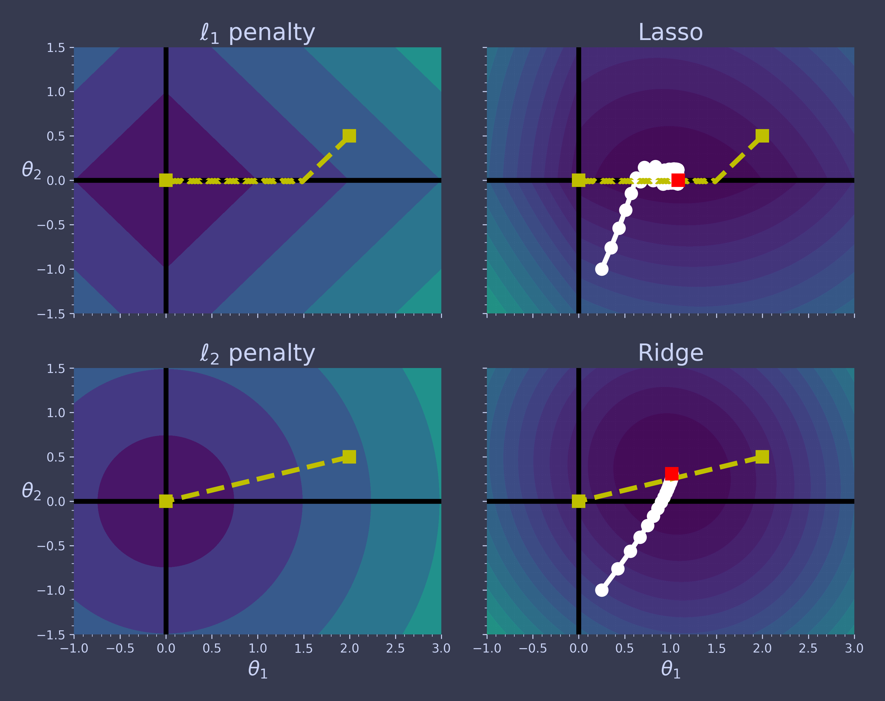
Elastic Net
from sklearn.linear_model import ElasticNet elastic_net = ElasticNet(alpha=0.1, l1_ratio=0.5) elastic_net.fit(X, y) print(elastic_net.predict([[1.5]]))
[1.54333232]
Early Stopping
from copy import deepcopy from sklearn.metrics import root_mean_squared_error from sklearn.preprocessing import StandardScaler np.random.seed(42) m = 100 X = 6 * np.random.rand(m, 1) - 3 y = 0.5 * X ** 2 + X + 2 + np.random.randn(m, 1) X_train, y_train = X[: m // 2], y[: m // 2, 0] X_valid, y_valid = X[m // 2 :], y[m // 2 :, 0] preprocessing = make_pipeline(PolynomialFeatures(degree=90, include_bias=False), StandardScaler()) X_train_prep = preprocessing.fit_transform(X_train) X_valid_prep = preprocessing.transform(X_valid) sgd_reg = SGDRegressor(penalty=None, eta0=0.002, random_state=42) n_epochs = 500 best_valid_rmse = float('inf') train_errors, val_errors = [], [] for epoch in range(n_epochs): sgd_reg.partial_fit(X_train_prep, y_train) y_valid_predict = sgd_reg.predict(X_valid_prep) val_error = root_mean_squared_error(y_valid, y_valid_predict) if val_error < best_valid_rmse: best_valid_rmse = val_error best_model = deepcopy(sgd_reg) y_train_predict = sgd_reg.predict(X_train_prep) train_error = root_mean_squared_error(y_train, y_train_predict) val_errors.append(val_error) train_errors.append(train_error) best_epoch = np.argmin(val_errors) plt.figure(figsize=(11, 6)) plt.annotate('Best model', xy=(best_epoch, best_valid_rmse), xytext=(best_epoch, best_valid_rmse + 0.5), ha="center", arrowprops=dict(facecolor='black', shrink=0.05)) plt.plot([0, n_epochs], [best_valid_rmse, best_valid_rmse], "k:", linewidth=2) plt.plot(val_errors, "-", linewidth=3, label="Validation set") plt.plot(best_epoch, best_valid_rmse, "bo") plt.plot(train_errors, "--", linewidth=2, label="Training set") plt.legend(loc="upper right") plt.xlabel("Epoch") plt.ylabel("RMSE") plt.axis([0, n_epochs, 0, 3.5]) cp.store_fig("early-stopping-plot-quadratic-data", close = True)
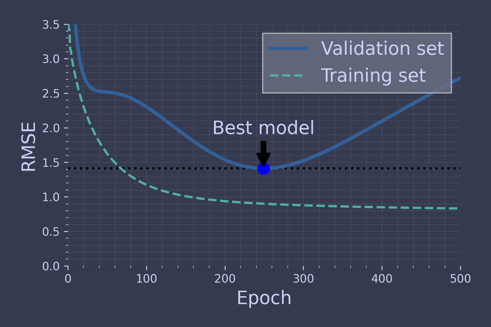
Logistic Regression
Estimating Probabilities
lim = 6 t = np.linspace(-lim, lim, 100) sig = 1 / (1 + np.exp(-t))
plt.figure(figsize=(11, 6)) plt.plot([-lim, lim], [0, 0], "k-") plt.plot([-lim, lim], [0.5, 0.5], "k:") plt.plot([-lim, lim], [1, 1], "r:") plt.plot([0, 0], [-1.1, 1.1], "-") plt.plot(t, sig, "-", linewidth=2, label=r"$\sigma(t) = \dfrac{1}{1 + e^{-t}}$") plt.xlabel("t") plt.legend(loc="upper left") plt.axis([-lim, lim, -0.1, 1.1]) plt.gca().set_yticks([0, 0.25, 0.5, 0.75, 1]) cp.store_fig("logistic-function", close = True)
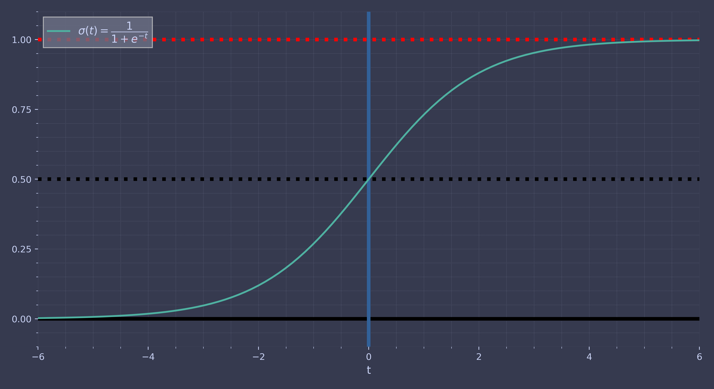
Desicion Boundaries
from sklearn.datasets import load_iris iris = load_iris(as_frame=True) print(list(iris))
['data', 'target', 'frame', 'target_names', 'DESCR', 'feature_names', 'filename', 'data_module']
print(iris.DESCR)
.. _iris_dataset:
Iris plants dataset
--------------------
**Data Set Characteristics:**
:Number of Instances: 150 (50 in each of three classes)
:Number of Attributes: 4 numeric, predictive attributes and the class
:Attribute Information:
- sepal length in cm
- sepal width in cm
- petal length in cm
- petal width in cm
- class:
- Iris-Setosa
- Iris-Versicolour
- Iris-Virginica
:Summary Statistics:
============== ==== ==== ======= ===== ====================
Min Max Mean SD Class Correlation
============== ==== ==== ======= ===== ====================
sepal length: 4.3 7.9 5.84 0.83 0.7826
sepal width: 2.0 4.4 3.05 0.43 -0.4194
petal length: 1.0 6.9 3.76 1.76 0.9490 (high!)
petal width: 0.1 2.5 1.20 0.76 0.9565 (high!)
============== ==== ==== ======= ===== ====================
:Missing Attribute Values: None
:Class Distribution: 33.3% for each of 3 classes.
:Creator: R.A. Fisher
:Donor: Michael Marshall (MARSHALL%PLU@io.arc.nasa.gov)
:Date: July, 1988
The famous Iris database, first used by Sir R.A. Fisher. The dataset is taken
from Fisher's paper. Note that it's the same as in R, but not as in the UCI
Machine Learning Repository, which has two wrong data points.
This is perhaps the best known database to be found in the
pattern recognition literature. Fisher's paper is a classic in the field and
is referenced frequently to this day. (See Duda & Hart, for example.) The
data set contains 3 classes of 50 instances each, where each class refers to a
type of iris plant. One class is linearly separable from the other 2; the
latter are NOT linearly separable from each other.
|details-start|
**References**
|details-split|
- Fisher, R.A. "The use of multiple measurements in taxonomic problems"
Annual Eugenics, 7, Part II, 179-188 (1936); also in "Contributions to
Mathematical Statistics" (John Wiley, NY, 1950).
- Duda, R.O., & Hart, P.E. (1973) Pattern Classification and Scene Analysis.
(Q327.D83) John Wiley & Sons. ISBN 0-471-22361-1. See page 218.
- Dasarathy, B.V. (1980) "Nosing Around the Neighborhood: A New System
Structure and Classification Rule for Recognition in Partially Exposed
Environments". IEEE Transactions on Pattern Analysis and Machine
Intelligence, Vol. PAMI-2, No. 1, 67-71.
- Gates, G.W. (1972) "The Reduced Nearest Neighbor Rule". IEEE Transactions
on Information Theory, May 1972, 431-433.
- See also: 1988 MLC Proceedings, 54-64. Cheeseman et al"s AUTOCLASS II
conceptual clustering system finds 3 classes in the data.
- Many, many more ...
|details-end|
iris.data.head(3)
sepal length (cm) sepal width (cm) petal length (cm) petal width (cm) 0 5.1 3.5 1.4 0.2 1 4.9 3.0 1.4 0.2 2 4.7 3.2 1.3 0.2
iris.target.head(3) # note that the instances are not shuffled
iris.target_names
from sklearn.linear_model import LogisticRegression from sklearn.model_selection import train_test_split X = iris.data[["petal width (cm)"]].values y = iris.target_names[iris.target] == 'virginica' X_train, X_test, y_train, y_test = train_test_split(X, y, random_state=42) log_reg = LogisticRegression(random_state=42) log_reg.fit(X_train, y_train)
X_new = np.linspace(0, 3, 1000).reshape(-1, 1) y_proba = log_reg.predict_proba(X_new) decision_boundary = X_new[y_proba[:, 1] >= 0.5][0, 0]
plt.figure(figsize=(10, 6)) plt.plot(X_new, y_proba[:, 0], "b--", linewidth=2, label="Not Iris virginica proba") plt.plot(X_new, y_proba[:, 1], "g-", linewidth=2, label="Iris virginica proba") plt.plot([decision_boundary, decision_boundary], [0, 1], "k:", linewidth=2, label="Decision boundary") plt.arrow(x=decision_boundary, y=0.08, dx=-0.3, dy=0, head_width=0.05, head_length=0.1, fc="b", ec="b") plt.arrow(x=decision_boundary, y=0.92, dx=0.3, dy=0, head_width=0.05, head_length=0.1, fc="g", ec="g") plt.plot(X_train[y_train == 0], y_train[y_train == 0], "bs") plt.plot(X_train[y_train == 1], y_train[y_train == 1], "g^") plt.xlabel("Petal width (cm)"), plt.ylabel("Probability") plt.legend(loc="center left"), plt.axis([0, 3, -0.02, 1.02]) plt.grid(), cp.store_fig("logistic_regression_plot", close = True)
decision_boundary
log_reg.predict([[1.7], [1.5]])
X = iris.data[["petal length (cm)", "petal width (cm)"]].values y = iris.target_names[iris.target] == 'virginica' X_train, X_test, y_train, y_test = train_test_split(X, y, random_state=42) log_reg = LogisticRegression(C=2, random_state=42) log_reg.fit(X_train, y_train) # for the contour plot x0, x1 = np.meshgrid(np.linspace(2.9, 7, 500).reshape(-1, 1), np.linspace(0.8, 2.7, 200).reshape(-1, 1)) X_new = np.c_[x0.ravel(), x1.ravel()] # one instance per point on the figure y_proba = log_reg.predict_proba(X_new) zz = y_proba[:, 1].reshape(x0.shape) # for the decision boundary left_right = np.array([2.9, 7]) boundary = -((log_reg.coef_[0, 0] * left_right + log_reg.intercept_[0]) / log_reg.coef_[0, 1])
plt.figure(figsize=(10, 6)) plt.plot(X_train[y_train == 0, 0], X_train[y_train == 0, 1], "bs") plt.plot(X_train[y_train == 1, 0], X_train[y_train == 1, 1], "g^") contour = plt.contour(x0, x1, zz, cmap=plt.cm.brg) plt.clabel(contour, inline=1) plt.plot(left_right, boundary, "k--", linewidth=3) plt.text(3.5, 1.27, "Not Iris virginica", color="b", ha="center") plt.text(6.5, 2.3, "Iris virginica", color="g", ha="center") plt.xlabel("Petal length") plt.ylabel("Petal width") plt.axis([2.9, 7, 0.8, 2.7]) cp.store_fig("logistic-regression-contour-plot", close = True)
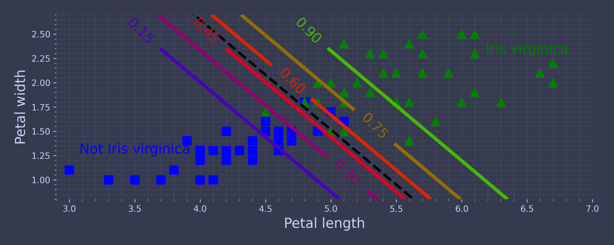
Softmax Regression
Softmax regression (or multinomial logistic regression) is a generalization of logistic regression to the case where we want to handle multiple classes.
X = iris.data[["petal length (cm)", "petal width (cm)"]].values y = iris["target"] X_train, X_test, y_train, y_test = train_test_split(X, y, random_state=42) softmax_reg = LogisticRegression(C=30, random_state=42) softmax_reg.fit(X_train, y_train)
softmax_reg.predict([[5, 2]]) softmax_reg.predict_proba([[5, 2]]).round(2)
from matplotlib.colors import ListedColormap custom_cmap = ListedColormap(["#fafab0", "#9898ff", "#a0faa0"]) x0, x1 = np.meshgrid(np.linspace(0, 8, 500).reshape(-1, 1), np.linspace(0, 3.5, 200).reshape(-1, 1)) X_new = np.c_[x0.ravel(), x1.ravel()] y_proba = softmax_reg.predict_proba(X_new) y_predict = softmax_reg.predict(X_new) zz1 = y_proba[:, 1].reshape(x0.shape) zz = y_predict.reshape(x0.shape)
plt.figure(figsize=(10, 6)) plt.plot(X[y == 2, 0], X[y == 2, 1], "g^", label="Iris virginica") plt.plot(X[y == 1, 0], X[y == 1, 1], "bs", label="Iris versicolor") plt.plot(X[y == 0, 0], X[y == 0, 1], "yo", label="Iris setosa") plt.contourf(x0, x1, zz, cmap=custom_cmap) contour = plt.contour(x0, x1, zz1, cmap="hot") plt.clabel(contour, inline=1) plt.xlabel("Petal length") plt.ylabel("Petal width") plt.legend(loc="center left") plt.axis([0.5, 7, 0, 3.5]) cp.store_fig("softmax-regression-contour-plot", close = True)
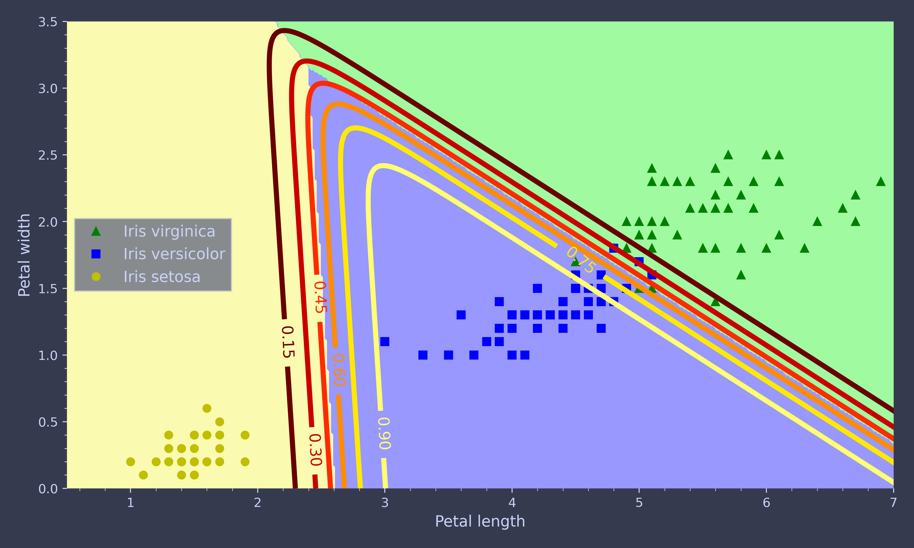